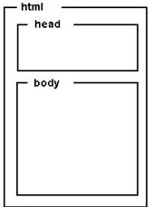

Введение в HTML
По сути, HTML довольно простой язык, состоящий из элементов, которые могут быть применены к частям текста, чтобы придавать им различные значения (Это абзац? Это маркированный список? Это часть таблицы?), разделять документ на логические секции (есть ли у документа шапка? три столбца с контентом? меню навигации?) и добавлять контент на Вашу страницу, такой как фото и видео. Этот модуль расскажет вам о первых двух возможностях HTML и научит фундаментальным концепциям и синтаксису, которые вам нужно знать, чтобы понять HTML.
Необходимые условия
Чтобы начать изучение этого модуля, вам не нужны никакие знания HTML, но вы должны иметь хотя бы базовые навыки обращения с компьютером и навыки пассивного использования Веба (т.е просто смотря на него, потребляя контент). У вас должна быть базовая рабочая среда, описанная в разделе Установка базового программного обеспечения), а также понимание, как создавать и управлять файлами, что подробно описано в статье Работа с файлами — обе статьи являются частью нашего модуля Начало работы с сетью.
Примечание: если вы работаете на компьютере/планшете/другом устройстве, с отсутствием возможности создания собственных файлов, вы можете испробовать примеры кода (большинство) в онлайн-редакторах кода, таких как JSBin или Thimble.
Руководства
Этот модуль содержит следующие статьи, которые помогут изучить всю основную теорию HTML и предоставят широкие возможности для проверки некоторых навыков.
Начало работы с HTML
Охватывает базовые основы HTML, чтобы вы начали изучение - мы опишем элементы, атрибуты и все другие важные термины, о которых вы, возможно, уже слышали, а также где и как они располагаются в языке. Мы также покажем, структуру HTML-элемента, как устроена типичная страница HTML, и объясним другие важные языковые особенности. По ходу мы будем играть с HTML так, чтобы вам было интересно!
Что такое заголовок? Метаданные в HTML
Заголовок HTML — это часть документа, которая не отображается в браузере при загрузке страницы. Он содержит информацию, такую как: страница (title), ссылки на CSS (если вы хотите стилизовать свой HTML при помощи CSS), ссылки на пользовательские значки и метаданные (которые представляют собой данные о HTML, например, кто его написал или важные ключевые слова, которые описывают документ).
Основы редактирования текста в HTML
Основной задачей HTML является придание тексту значения (также известно, как семантика), чтобы браузер знал, как его правильно отображать. В этой статье рассматривается то, как использовать HTML, чтобы разбить блок текста на структуру из заголовков и абзацев, добавить акцент/значение слов, создать списки и многое другое.
Создание гиперссылок
Гиперссылки очень важны — ведь именно они делают интернет интернетом. В этой статье описан синтаксис, необходимый для создания ссылок, а также описано их наилучшее применение на практике.
Углублённое форматирование текста
Существует множество других элементов HTML для редактирования текста, про которые мы вам не рассказали в статье Основы редактирования текста в HTML. Описанные здесь элементы менее известны, но о них также полезно знать. Здесь вы узнаете о разметке цитат, списках описания, компьютерном коде и другом сопутствующем тексте, нижнем и верхнем индексах, контактной информации и многом другом.
Структура документа и веб-сайта
Помимо определения отдельных частей страницы (таких как "абзац" или "изображение"), HTML также используется для определения отдельных зон веб-сайта (таких как "шапка", "меню навигации", "столбец с основным содержимым".) В этой статье рассматривается, как планировать базовую структуру веб-сайта и писать HTML для представления этой структуры.
Отладка HTML
Писать на HTML хорошо, но что, если что-то идёт не так, и вы не можете найти место ошибки в коде? В этой статье вы познакомитесь с некоторыми инструментами, которые могут вам помочь.
Оценка
Следующие задания проверят ваше понимание основ HTML, описанных в приведённых выше руководствах.
Разметка письма
Все мы рано или поздно учимся писать письма; также это полезный тест, для проверки ваших навыков форматирования текста! Поэтому, в этом задании вам будет предоставлено письмо для разметки.
Структурируем страницу
Этот тест проверит вашу способность использовать HTML для структурирования простой страницы, которая содержит шапку ("хедер") , нижний колонтитул ("футер"), меню навигации, основное содержимое и боковую панель.
Смотрите также
Основы интернет-грамотности
Отличный фундаментальный курс Mozilla, который даёт множество тестов, проверяющих знания, о которых мы говорили в модуле Введение в HTML. Учащиеся знакомятся с чтением, письмом и использованием сети в модуле из 6 частей. Откройте для себя основы Интернета через производство и сотрудничество.
HTML - это язык разметки, который представляет простые правила оформления и компактный набор структурных и семантических элементов разметки (тегов). HTML позволяет описывать способ представления логических частей документа (заголовки, абзацы, списки и т.д.) и создавать веб-страницы разной сложности.
HTML не является языком программирования, но веб-страницы могут содержать встроенные или загружаемые программы на скриптовых языках (в первую очередь Javascript) и программы-апплеты на языке Java.
Структура HTML-документа
html.JPG
HTML-документ состоит из текста, который представляет собой информационное содержимое и специальных средств языка HTML — тегов разметки, которые определяют структуру и внешний вид документа при его отображении браузером. Структура HTML-документа довольно проста:
1.Описание документа начинается с указания его типа (секция DOCTYPE).
2.Текст документа заключается в тег (html). Текст документа состоит из заголовка и тела, которые выделяются соответственно тегами (head) и (body).
В заголовке (head) указывают название HTML-документа и другие параметры, которые браузер будет использовать при отображении документа.
Тело документа (body) — это та часть, в которую помещается собственно содержимое HTML-документа. Тело включает предназначенный для отображения текст и управляющую разметку документа (теги), которые используются браузером.
Наличие секции DOCTYPE позволяет указать браузеру, какой тип документа ему предстоит разбирать, т.е, какие требования нужно выполнять при обработке гипертекста.
Заголовок предназначен для размещения метаинформации, описывающей веб-документ как таковой.
Блок (body) содержит то, что нужно показать пользователю: текст, изображения, внедренные объекты и пр.
Стандарт требует, чтобы секция DOCTYPE присутствовала в документе, т.к. это позволяет ускорить и улучшить обработку гипертекста. Это достигается за счет того, что браузер может не делать предположений о том, как интерпретировать теги, а свериться со стандартным определением (файлом .dtd).
Мета-тег HTML — это элемент разметки html, описывающий свойства документа как такового (метаданные). Назначение мета-тега определяется набором его атрибутов, которые задаются в теге (meta). Мета-теги размещают в блоке (head...head) веб-страницы. Они не являются обязательными элементами, но могут быть весьма полезны.
Тег (html-тег, тег разметки) — управляющая символьная последовательность, которая задает способ отображения гипертекстовой информации. HTML-тег состоит из имени, за которым может следовать необязательный список атрибутов. Весь тег (вместе с атрибутами) заключается в угловые скобки <>:
Как правило, теги являются парными и состоят из начального и конечного тегов, между которыми и помещается информация. Имя конечного тега совпадает с именем начального, но перед именем конечного тега ставится косая черта / (html...html). Конечные теги никогда не содержат атрибутов. Некоторые теги не имеют конечного элемента, например тег (img). Регистр символов для тегов не имеет значения.

Примеры часто используемых тегов HTML:
html...html — контейнер гипертекста
head...head — контейнер заголовка документа
title...title — название документа (то, что отображается в заголовке окна браузера)
body...body — контейнер тела документа
div>...div — контейнер общего назначения (структурный блок)
hN...hN — заголовок N-ного уровня(N = 1...6)
p...p — основной текст
a...a — гиперссылка
ol...ol — нумерованный список
ul...ul — маркированный список
li...li — элемент списка
table...table — контейнер таблицы
tr...tr — строка таблицы
td...td — ячейка таблицы
img...img — изображение
form...form — форма
i...i — отображение текста курсивом
b...b — отображение текста полужирным шрифтом
em...em — выделение (курсивом)
strong...strong — усиление (полужирным шрифтом)
br — принудительный разрыв строки
Теги могут быть вложены, при этом форматирование внутреннего тега имеет преимущество перед внешним. При использовании вложенных тегов их нужно закрывать, начиная с самого последнего и двигаясь к первому.
Атрибуты — это пары вида «свойство = значение», уточняющие представление соответствующего тега: Атрибуты указывают в начальном теге, несколько атрибутов разделяют одним или несколькими пробелами, табуляцией или символами конца строки. Значение атрибута, если таковое имеется, следует за знаком равенства, стоящим после имени атрибута. Порядок записи атрибутов в теге не важен. Если значение атрибута — одно слово или число, то его можно просто указать после знака равенства, не выделяя дополнительно. Все остальные значения необходимо заключать в кавычки, особенно если они содержат несколько разделенных пробелами слов.
Краткий список некоторых часто используемых атрибутов и их возможных значений:
style="описание_стилей" — локальные стили
src="адрес" — адрес (URI) источника данных (например картинки или скрипта)
align="left|center|right|justify" — выравнивание, по умолчанию left (по левому краю)
width="число" — ширина элемента (в пикселях, пиках, поинтах и др.)
height="число" — высота элемента (в пикселях, пиках, поинтах и др.)
href="адрес" — гиперссылка, адрес (URI) на который будет выполнен переход
name="имя" — имя элемента
id="идентификатор" — уникальный (в пределах веб-страницы) идентификатор элемента
size="число" — размер элемента
class="имя_класса" — имя класса во встроенной или связанной таблице стилей
title="строка" — название элемента
alt="строка" — альтернативный текст
Гиперссылка - это особым образом помеченный фрагмент веб-страницы (текст, изображение и др.), который связан с другим документом. Для указания гиперссылок используется тег (a). Гиперссылки позволяют перемещаться между связанными веб-страницами.
Переход по ссылкам можно выполнять как на целые документы, так и на специальным образом помеченные (именованные) фрагменты текста. Ссылки могут быть абсолютными и относительными. Абсолютные ссылки указывают, как правило, на внешний ресурс. Для них нужно указывать полный путь:
Относительные ссылки, напротив, используют для перехода на внутренние страницы сайта. Для них нужно указывать путь относительно ссылающейся страницы:
Кроме тегов, в HTML-документах могут присутствовать и специальные символы. Например, © — знак авторского права. Для отображения специальных символов используется мнемонический или числовой код вида &имя; или &#NNNN;, где NNNN — код символа в Юникоде в десятеричной системе счисления. Например: & (числовой код ©) — амперсанд (&), < — символ «меньше» (<) и > — символ «больше» (>), « — левая типографская кавычка («) и т.д.
Разнообразие браузеров и различия в их функциональности, а также изначальная ориентация HTML на поддержку различных устройств вывода, приводит разработчиков веб-сайтов к необходимости решения вопроса о кросс-браузерности. Кросс-браузерность — свойство сайта отображаться и работать во всех популярных браузерах идентичн. Под идентичностью понимается отсутствие развалов верстки и способность отображать материал с одинаковой степенью читабельности. Термин «кросс-браузерность» начали использовать во время браузерных войн, начавшихся с серидины 90-х годов XXв. В этом контексте термин относился к сайтам, которые одинаково работают как в Internet Explorer, так и в Netscape Navigator. В то время производители стали внедрять собственные функции для браузеров, что привело к существенным отличиям отображения веб-содержимого и концептуальным различиям в разработке веб-сайтов. В настоящее время ситуация смягчилась (отчасти из-за ухода с рынка Netscape), но не настолько, чтобы можно было говорить о близком окончании браузерных войн.